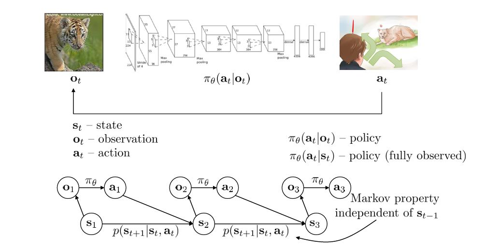
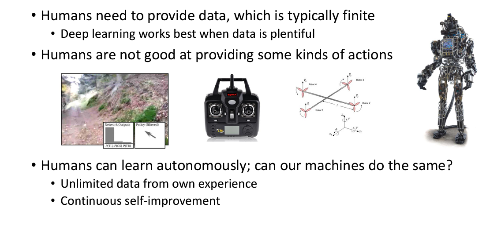

Non-Markovian behavior refers to situations where the expert’s actions depend on the history of observations, not just the current state.
Where multiple actions are valid for the same state leading to a complex distribution of possible actions
Solutions:
Mixture of Gaussians:
Latent Variable Models:
Diffusion Models:
